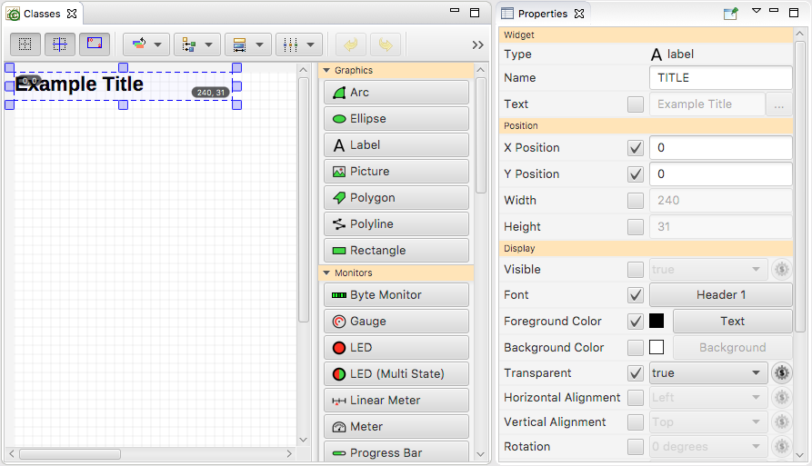

The Display Builder is a panel editor and runtime for control system displays.
The Display Builder example files demonstrate many of its widgets and features.
Open the menu CS-Studio > Utilities > Install Samples. Select Display Builder and click OK. The examples will be in a project folder named "Display Builder".
Start the first example display, 01_main.bob, by right-clicking on the file in the Navigator and selecting Open With... > Display Runtime.
You use the Display Editor to create new display files or to modify existing display files.
The Display Editor perspective offers the tools and settings needed to edit Display Builder (*.bob) files. From CS-Studio, the Display Editor perspective can be opened from the menu bar: Window > Open Perspective > Other..., then select Display Editor.
Alternatively, if you are already inside the display editor, right-click in the central Editor part and select Open Editor Perspective. This will open the Display Editor perspective, or - in case are already in that perspective - a dialog will ask if you want to reset the perspective to its default layout.
From within the Display Editor perspective, right-click on a project in the Navigator and select New > New Display. This will open the New Display wizard where you enter the name of your new display file.
Alternatively, you can use the menu File > New..., and under Display Editor, select New Display. Then choose a container and name for the new display file in the New Display wizard.
Right-click on a *.bob or *.opi file in the Navigator and select Open With... > Display Editor (or Other > Display Editor).
If you are already executing a display, you can open that display file in the editor by right-clicking anywhere in the display runtime and selecting Open in Editor.
Right-click anywhere in the editor pane and select Execute Display to start a Display Runtime for the file. This will automatically save the file, so any pending changes will be written to the *.bob file.
There are two fundamental ways of adding widgets to a display:
Either way you add a widget, if the Align widgets to Grid option is selected in the toolbar, the new widget location will snap to the closest grid position.
The newly added widget will be automatically selected, allowing you to quickly move or resize it as described below.

Most of the editing is performed dragging things around:
The easiest way to select a single widget is by clicking on it. De-select it by clicking it again, or by clicking on the background of the display where there is no widget.
To select multiple widgets, hold the 'Control' key and then click on widgets to add them to the selection. To de-select one widget from a multi-widget selection, hold the 'Control' key and then click on an already selected widget.
The easiest way to select multiple nearby widgets is by rubber banding around it. Click on the editor's background and, while keeping the mouse button depressed, drag until the dashed rubber band encloses all the widgets of interest. When you release the mouse button, the selected widgets will be surrounded by the selection outline.
Once one or more widgets are selected, they can be moved and resized as a single entity, as explained in the following paragraphs. In addition, the properties of all selected widgets can be adjusted in the Properties Panel.


Once widgets are selected, it is possible to move them around by clicking inside the selection outline and dragging. The selection outline will follow the cursor movements until the mouse button will be released, and the widgets will be actually moved.
If the
 Align widgets to Grid button is selected, then the selection outline
will align to grid points when moving.
Align widgets to Grid button is selected, then the selection outline
will align to grid points when moving.
If the
 Snap to widgets button is selected, then the selection outline
will align to existing widgets' edges when moving, displaying a cyan alignment ruler.
Snap to widgets button is selected, then the selection outline
will align to existing widgets' edges when moving, displaying a cyan alignment ruler.
If the
 Widget Coordinates button is selected, and the selection outline is
large enough to accomodate the additional information,
selection outline will indicate the location and size.
Widget Coordinates button is selected, and the selection outline is
large enough to accomodate the additional information,
selection outline will indicate the location and size.
If the Shift Key is held while moving the selected widgets, the move is restricted to a horizontal or vertical move.

Once widgets are selected, it is possible to resize them by clicking inside one of the selection outline's handles and dragging. The selection outline will follow the cursor movements until the mouse button will be released, and the widgets will be actually resized.
The
 Align widgets to Grid,
Align widgets to Grid,
 Snap to widgets
and
Snap to widgets
and
 Widget Coordinates buttons again control if the resized region
snaps to grid coordinates or other widgets,
optionally displaying the location and size.
Widget Coordinates buttons again control if the resized region
snaps to grid coordinates or other widgets,
optionally displaying the location and size.
Different entities dragged from outside the editor can be dropped in. When the nature of these entities is compatible, the editor will accept the drag an drop operation creating a series of widgets.
An image (possibly dragged from a web browser) can be dropped into the editor. That image will be saved into a temporary location and Picture widget will be created pointing the the saved image file.
Note: The created Picture widget will have its top-left corner at the location (possibly snapped to grid) wher the cursor was when the image was dropped.
The created widget will be automatically sized the to dropped image size.
 ➟
➟

Image files (with extension .bmp, .gif, .jpeg,
.jpg, .png, and .svg) and OPI files (with extension
.bob, and .opi) can be dropped into the editor.
A single image file will create Picture widgets. Multiple image files will create a
Symbol widget, while OPI files will create
Embedded Display ones. The created widget will reference the dropped file,
using (if possible) a relative path location.
Multiple files can be dropped at once. Each one will create its own corresponding widget (Picture or Embedded Display), that will be offset by a grid step in both coordinates from the preceeding one.
When dropping a URL into the editor, one of the following situations occurs:
.bmp,
.gif, .jpeg, .jpg, and .png),
then a Picture widget will be created and positioned under the (possibly aligned
to grid) cursor position;
.bob,
and .opi), then an Embedded Display widget will be created and
positioned under the (possibly aligned to grid) cursor position;

Text may be composed of a single or multiple lines. Each line could be interpreted as a PV name. For this reason a dialog will open allowing to select a single Label widget (displaying the whole text), multiple Label Widgets (displaying a line each), or multiple widgets (of the same type) using each line as a PV name.
Multiple widgets will be offset by a grid step in booth coordinates from the preceding one.
 ➟
➟
 ➟
➟

The Display builder automatically convert BOY *.opi files. Whenever you open a *.opi file, the Display Builder maps all legacy widgets to the new widgets and their corresponding properties.
In many cases, existing *.opi require no changes at all to execute properly in the Display Builder runtime. This means you can simply select an existing *.opi file in the Navigator and use the Open With... > Display Runtime context menu to execute the display. Likewise, actions that open related displays in legacy *.opi file format will automatically load, convert and execute those.
Sometimes, you may want to slightly rearrange widgets to look better in the Display Runtime. In rare cases, you will have to edit the file because widget behavior has changed. Also beware that most scripts associated with the display need to be updated. Scripts are the most likely cause of failures in converted files. Finally, you might simply want to change the display to get new behavior.
To edit, simply right-click on any *.opi file in the Navigator and use Open With... > Display Editor to load the legacy file into the Display Builder editor. If you are already executing the file in the Display Builder runtime, use the context menu to Open in Editor. You can now edit the file. When saving the file, the file name is changed to *.bob.
Whenever the Display Builder is asked to open a *.opi file, it will check for an alternate *.bob file.
To transition from BOY to the Display Builder, it is thus best to start with the existing *.opi files. For those files that need to be adjusted, edit the *.opi file and save it as a new *.bob file, but keep the previous *.opi file. This way, BOY can still be used with the existing files, while the Display Builder will select the converted files, and both tools can thus be used in parallel until all files that need adjustments have been updated.
If the only change required in a *.opi file relates to a script, that script can be made bilingual by following the Display Builder example from Display Builder/script_util/porting.opi and Display Builder/script_util/portable.py.
Create a new display file via New > New Display, but enter a file name like "classes.bcf" that ends in *.bcf instead of the usual "*.bob" to create a class file.
When the display editor is used for class files, each property of a widget has a check box next to it to mark this property as being included in the class definition. For example, drag a Label widget from the palette into the editor. Set its name to TITLE. Then check the x, y, font, color and transparent properties and set them as shown in the screenshot.
This defines a "TITLE" class for labels: Its position is always in the upper left corner of the display (x and y set to 0). It uses a certain font and colors.
Open the menu Edit > Preferences to locate the Display Builder settings. Note the "Widget Class Files:" setting which allows for a list of class files, separating multiple entries with a semicolon. The class files are loaded when the display builder starts for the first time. They are re-loaded whenever you save a class file, or via the Re-load Widget Classes context menu of the display file editor.
When you now open the display editor to create a new display,
i.e. a "*.bob" file and add a label to the display,
note that the "class" property has a drop-down list that includes
"TITLE" as a known class name.
Selecting "TITLE" will apply the x, y, font, color and transparent
settings that were defined in the class.
Furthermore, these properties are marked with a
 in the property panel, they cannot be modified.
in the property panel, they cannot be modified.
The display is saved with all the settings of the widget, including those that were provided by the class. Whenever a display is executed in the display builder runtime, the current class settings are applied. If the current class files don't define a "TITLE" class for labels, the display will appear as it was last saved. If the current class files do define a "TITLE" class for labels, those will be applied, meaning you can update the class definition files and those new settings will then be applied when a display is executed.
When you execute a display, the Display Builder runtime opens the *.bob (or legacy *.opi) file, connects to process variables, displays their value in Text Update widgets etc.
When you right-click on a widget, the first entry in the context menu which shows the name of the widget opens an information panel for the widget. Additional entries allow saving a snapshot of the display, or to re-load the display.
The Display Runtime Perspective is initially empty, meant to display runtime panels.
For a production setup, use the Display Builder "Top Displays" preference to configure a list of top level displays, i.e. starting points for your users.
Then open the Display Runtime Perspective, and use either the menu File > Top Displays or the Top Displays drop-down button in the tool bar to open these from within the Display Runtime Perspective. Display runtime panels can then be arranged by dragging their title tabs into the desired location.
Typically, at least one such Display Runtime Perspective with a pre-arranged displays layout is then saved as a named Perspective and used as a default layout.
The Full-screen entry in the runtime panel context menu allows toggling the workbench window into and out of full-screen mode. In full-screen mode, the menu, toolbar and status bar are hidden to maximize the area available for display runtimes. Only the title tabs of each display are still shown. Exact details depend on the operating system. For Mac OS X, the menu bar is hidden but remains accessible when moving the mouse to the top of the screen. On Linux, the menu is turned off. If supported by the operating system, the full-screen mode selects a window mode in which the window becomes the only visible window on the monitor, always on top of all other windows on that computer display.
To exit full-screen mode and restore the menu, toolbar and status bar, invoke the Exit Full-screen entry in the runtime panel context menu.
Selecting Change to Standalone Window from the runtime panel context menu closes the display runtime panel in the workbench window and instead opens that runtime as a plain standalone window.
Advantage:
Disadvantage:
Widgets are the components of Display Builder displays. In the editor, you add Widgets to the display by dragging them from the Widget Palette into the editor. Then you typically adjust the location and size, and enter a text or PV name by configuring the corresponding property.
The following is a brief description of core widgets. For details on each widget refer to the example displays. They showcase each widget and explain their key properties.
These widgets represent static content.
One or more lines of text. Use to create labels or descriptions.
Graphic elements for creating basic diagrams.
For Polygon and Polyline refer to example display to learn about editor support for creating and modifying the points of a polygon/line.
Widget for adding images (PNG, GIF, ..) to the display.
These widgets show the current value of a PV.
Main widget for displaying the current value of a PV.
Widgets that display the current value of a PV in a graphical way.
These widgets allow you to change the value of a PV.
These widgets create plot, typically requiring waveforms or multiple PVs.
These widgets structure several basic widgets or complete displays witnin a display.
Groups several basic widgets, by default adding a labelled border around them.
Includes another display within the current display. The embedded display is usually a smaller, re-usable display that utilized macros instead of complete PV names. The embedded display widget can then include that sub-display with suitable macros.
Every widget has properties x, y, width and height that define its position and size within the display. While these properties can be entered in the Properties View, a widget can also be moved interactively by moving the selected widget in the editor with the mouse, and the size can be changed by moving the square handles in the corner of the selected widget with the mouse.
Label widgets have a text property for configuring the text shown in the label. Many widgets have a pv_name property for configuring the name of the PV that the widget will display or control at runtime. These key properties can be edited by double-clicking the selected widget and then entering the text or pv_name.

In general, properties are edited in the Properties View. It lists every property of a widget with its current value, and except for very few static properties it allows entering or selecting different values.
The "Properties" panel will show each property with a description like "X Position", "Text" or "PV Name". This is the localized description of each property which might be different in for example a German version of the Display Builder. Each property also has a unique name that is used in the *.bob file or when accessing a property from a rule or script. The name of a property is typically based on the simplified English description, all lower case: x, text, pv_name.
The Property View shows the underlying name of each property in a tool tip that appears when you hover the mouse over the property description. In the following description of properties, we always use the property name.
Type of widget (e.g. label, text_update). Each widget has both a localizable (translatable) type name and an internal type name used to identify the widget type in display files.
Used to identify the widget. Is best made unique within the display.
Location and size of the widget. Can be configured in the Property view, but are typically adjusted using the mouse on the selected widget.
Text that a Label widget displays. Can also be configured via double-click on the widget.
The PV that the widget uses to read or write values. Can also be configured via double-click on the widget.
Attach Actions that do things like open displays or run scripts. Primarily used with the Action Button widget.
Text that is displayed in a Label widget or used as the title of a Group widget.
All but the plain Graphics widget have at least one PV name. At runtime, the widget connects to this PV, displays its current value, and in the case of Control widgets also writes to it when you interact with the widget.
Text-based widgets have several formatting options for displaying the current value of a PV. For formats that use the precision, a precision of -1 uses the precision provided by the PV.
Each widget has several additional properties that for example allow the configuration of colors, the formatting of texts etc. Ideally, you can create a functional control system display by configuring the basic properties of a widget, relying on the default behavior of a widget. For special cases, widgets can use Rules that dynamically assign widget property values based on conditional expressions.
Similar to Rules but even more flexible are Scripts that dynamically control widget appearance and behavior.
Some widgets contain properties that are arrays and/or structures. For example, the Multi-State LED has a states property that is an array. The elements of the array are in turn structures with a value and a color. For access from Rules or Scripts these properties can be accessed via names (for structured properties) and indices (for array properties). Example:
states[0].value
states[1].color
Rules are the suggested way to obtain customized, dynamic behaviors beyond the capability of widget properties alone. The alternative to rules are scripts. Rules are recommended over scripts. While rules are more limited than scripts, their API is expected to remain stable as the Display Builder evolves. Scripts on the other hand are very likely to require adjustments when updating to a new version of the Display Builder.
Unlike scripts, rules require no code aside from simple expressions. Rules set widget property values according to boolean expressions using their input PVs. Since the execution of a rule is triggered by its trigger PVs, at least one input PV is needed for a rule.
In order to edit the Rules for a widget, first select it, then click on the button for its Rules property in the Properties palette. This will open the Rules dialog.

In the example shown in the screenshot, a rule named "New Rule" sets the "text" property of a Label widget. It is triggered by a "sim://ramp" PV. Whenever the value of that PV is greater than zero, the "text" property will be set to "Positive". Whenever the value of that PV is less or equal than zero, the "text" property will be set to a value that the user of that dialog was just about to enter as the screenshot was taken.
Key features include:
The standard comparison operators (<, >, ==, <=, >=, and !=) may be used. Logical operators may also be used. All input PVs of the rule are accessible as follows:
| Value Type | Syntax | Example |
|---|---|---|
| double value | pv{index} |
pv0 > pv1 |
| long int. value | pvInt{index} |
pvInt0 == 5 |
| alarm severity code | pvSev{index} |
pvSev > 0 |
| string value | pvStr{index} |
pvStr0 == "happy" |
Assume a rule for the "width" property of a widget. By default, the "Value" field provides the exact value, for example "40" for the width. In Value-as-Expression mode, the value can contain an expression like "20 + pv0 * 2" The expression will be evaluated by Python (Jython).
Checking this option changes the way the "Value" is handled.
Assume a rule for the "width" property of a widget. By default, the "Value" field provides the exact value, for example "40" for the width. In Value-as-Expression mode, the value can contain an expression like "20 + pv0 * 2" The expression will be evaluated by Python (Jython).
Rules are internally translated into scripts, which are then executed. The "Show Script" button allows previewing the the generated script, which can help to understand or debug a rule.
Ideally, a control system display can be created by simply adding several widgets and configuring their properties. In many cases, only the location, size and PV name of a widget needs to be configured.
There are cases, however, where the built-in widget functionality is not sufficient. Traditionally, this would be handled by developing a custom, site-specific user interface tool. The display builder script support often allows you to avoid the creation of such a custom tool.
Scripts are invoked from
The script always receives the widget which invoked it.
A script associated with PVs also receives the pvs
which might have triggered its invocation.
Example of invoking a script from PV changes:
At runtime, a connection is established to all PVs.
Whenever PVs marked as a "Trigger" change their value,
the script is invoked.
The script will receive a widget parameter
that holds the Label, and a pvs parameter
that holds a list of all PVs assigned to the script.
A typical example is a script that reads the values of its PVs, computes something, and uses the result to update one or more properties of the widget:
value = PVUtil.getDouble(pvs[0])
if value >= 0:
result = "Positive"
else:
result = "Negative"
widget.setPropertyValue("text", result)
By default, a script is only executed whenever a "Trigger" PV has a new value
and all PVs are connected.
A script can therefore assume that all PVs have a value, but since PVs can disconnect
at any time, especially for a longer running script, it is possible that the value
of a PV is not defined.
This will typically result in a script that fails to execute because it tries to access
a Python None value.
The widget indicates to the user via its border that there is one or more disconnected PV,
which includes disconnected script PVs.
Once the PV reconnects, the script will again execute successfully.
A careful Python script that needs to avoid None errors can check like this:
value = pvs[0].read()
if value is None:
widget.setPropertyValue("text", "Not connected")
else:
widget.setPropertyValue("text", ValueUtil.getString(value))
By default, a script will thus rarely see any PVs in a disconnected state. If a script actually needs to react to disconnect events, the script option to "Only trigger when all PVs are connected" can be de-selected in the script configuration dialog. The script will now be invoked
Example of invoking a script from an Action:
At runtime, pushing the button will invoke the script.
The script receives a widget parameter
that holds the Action Button.
A typical example is a script that performs some action outside of the display tool, then maybe displays the result in other widgets which it locates based on their name:
# 'widget' is the action button to which this script is attached
# If necessary, locate other widgets in the display by name:
from org.csstudio.display.builder.runtime.script import ScriptUtil
other = ScriptUtil.findWidgetByName(widget, "name_of_other_widget")
result = InvokeSomeCodeThatDoesSomething()
other.setPropertyValue("text", result)
Jython scripts are written in Python syntax, i.e. a very well designed, robust language. They execute within the same Java instance that also executes the display builder and have access to the complete API, including undocumented code.
Any script file with a name that ends in ".py" which does not contain the word "python" in its first line is executed as a Jython script. In addition, the code of Jython scripts can be embedded in the *.bob file.
As a downside, Jython scripts do not have access to the complete set of native Python libraries, for example numpy.
Python scripts are executed by a native Python interpreter outside of the display builder. They access key Display Builder API via networked proxies using Py4J. Python scripts have access to all native Python libraries, for example numpy.
Any script file with a name that ends in ".py" which contains the word "python" in its first line is executed as a Python script. This is typically accomplished via the usual Python shebang
#!/usr/bin/env python
Python scripts must be in *.py files, they cannot be embedded in the *.bob file.
As a downside, Python scripts incur some overhead at startup and whenever they access the Display Builder API, because this is done via networked proxies. They also depend on python being installed on the computer.
To use native python scripts, python must be installed on the computer. In addition, Py4J needs to be added if the invoked python code should interact with the display. This is typically done via
# For python 2.x easy_install py4j
or
# For python 3.x pip install py4j
For convenience, a Python module, connect2j, is provided with Display Builder; it implements a context
manager to manage the network connections and ensure that resources are properly released.
To install connect2j, do the following:
org.csstudio.display.builder.runtime_1.0.0.201605162005.jar.
unzip org.csstudio.display.builder.runtime_1.0.0.201605162005.jar scripts/*
jar xf org.csstudio.display.builder.runtime_1.0.0.201605162005.jar scripts/connect2j.py scripts/setup.py
cd scripts
python setup.py install
The main API of connect2j is the scriptContext context manager. Simply place code which accesses
Display Builder API inside a "with" statement using scriptContext, like so:
#!/usr/bin/env python
from connect2j import scriptContext
# Code that does not interact with Display Builder
with scriptContext('widget', 'pvs', 'ScriptUtil', 'PVUtil', dict=globals()):
# Code that uses DisplayBuilder APIs; for example:
value = PVUtil.getDouble(pvs[0])
# Code that does not interact with Display Builder
Above, the argument "dict=globals()" tells scriptContext to enter the previous
arguments in the calling module's global dict, where they may be accessed as global
variables and used as typical Display Builder API. Without a dict argument supplied,
the appropriate entries are made in the connect2j module's global dict and must be
imported from connect2j after the script context is created. Any or all of
the string arguments may be omitted, and no variables or proxies will be created for the omitted arguments.
As an additional convenience, connect2j.scriptContext may also be used in Jython code, which will
then be identical (except for the first line) to its corresponding Python code. Automatically, scriptContext
identifies the platform on which it is being run and chooses to either use Py4J to create proxies for its
arguments, or import the given utility classes and use the 'pvs' and 'widgets' which are already accessible from Jython.
| Native Python | Jython | |
|---|---|---|
| requirements | *.py file, "python" first line (i.e. shebang) | *.py (file or url) or embedded script |
| API | scriptContext (must be installed)
|
scriptContext (added to path)
|
| imports | libraries (numPy, sciPy, etc.) | Java classes (inc. PVUtil, ScriptUtil) |
| start display | no initial start time | a few seconds to start Jython interpreter |
| start script | about a second per script | virtually no start time per script |
Similar to Jython, JavaScript can be used as a language with execution inside the Java instance that also runs the Display builder.
Any script file with a name that ends in ".js" executed as JavaScript. In addition, the JavaScript code can be embedded in the *.bob file.
Each *.bob display has one script execution thread and one instance of the Jython, Python and JavaScript support. This allows scripts to run in the background without negatively impacting the user interface thread. It also allows scripts for different *.bob displays to execute in parallel.
To limit the use of resources, however, at most one script executes for a given *.bob display at a time. Furthermore, if a specific script is triggered by either an action or a PV change, further invocations of that same script are ignored until the current execution of the script finishes.
For details refer to the examples and the Java documentation